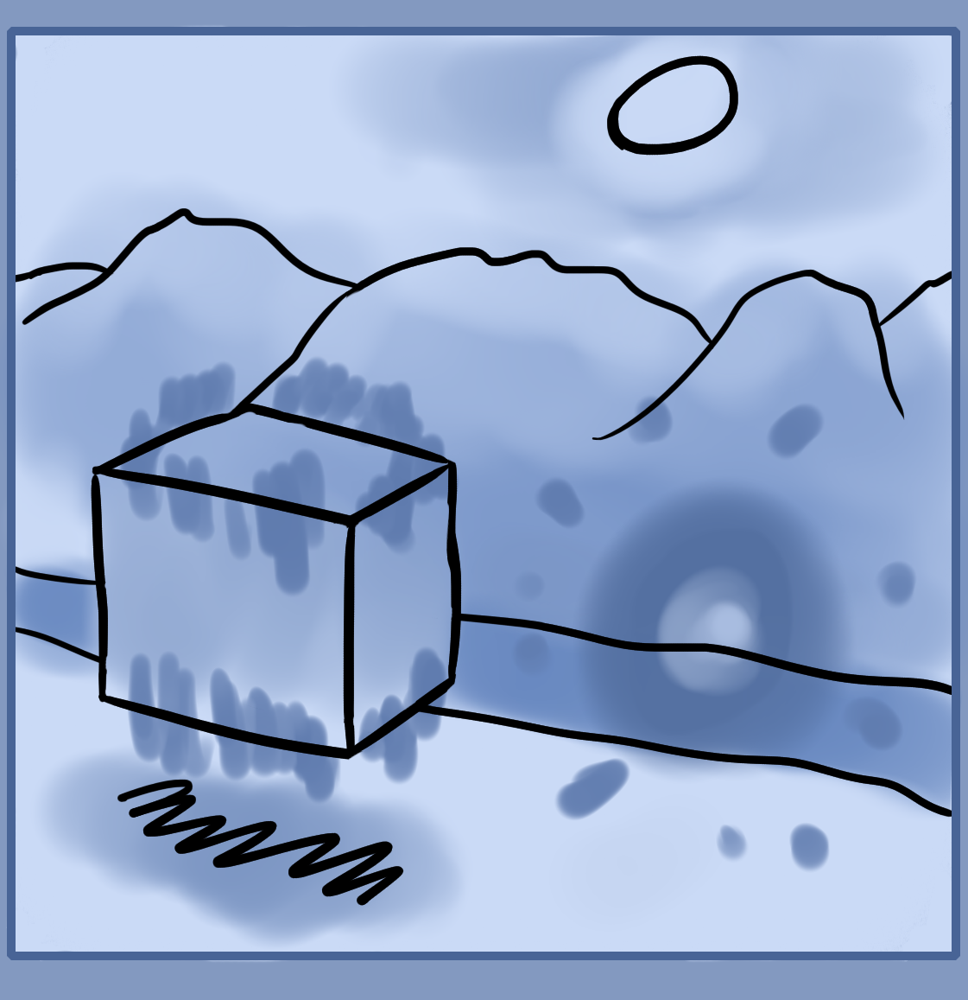

Lets have a more fun lesson in order to break up some of that theory. This one will cover ideas on "astral projection", imaginary worlds, imaginary beings or mental spirits, how you can create your own world and do whatever you want in your mind. This again will further develop your imagination and give you a space where you're able to practice and think up magical things to try. Ultimately the imaginary world or dimension is the middle magical realm.
Astral Projection Practice
When you daydream, imagine something, dream, get psychic visions and feelings these are usually all from the same place, the imaginary world. You can think of it as a subtle, illusory space or part of life which is accessed through your imagination. This place or part of reality does not exist physically, but more energetically. Similar to how the internet does not exactly exist physically except by it's medium of travel(wires or air) and interface device(Phone, PC). Though if you use a phone or pc then it unlocks an entire new world that exists as data within a machine. The imaginary world is similar where your mind acts as the interface or portal.
While the imaginary world does not exist in the physical one, it can overlay or even merge and mix with the physical world. This is where some forms of illusion magic and external imaginations can come into play.
Onto the practice. Begin by sitting and getting comfortable, close your eyes, warm your mind up by lightly focusing on the mental center and start to imagine an area or space like a forest, home or other area that you like.
Practice moving your field of vision or sight around as if you were turning your body or head in physical space. But currently you're just an observing spirit without a body. Next, try to move around. Start by using pressure to move left and right. This can be one way of moving. Otherwise you can "pick" yourself up like an object in our previous practices and try to move it(yourself) that way. Make sure you learn how to move in all dimensions, up left, down, right, forward, back and in between.
If you've ever played with 3D video game editors like unity then this is very similar, infact we're kind of developing our own internal game engine so to speak.
After you've mastered basic rotation and movement you can go onto the next stage.
Astral Projection Practice 2
Now it's time to practice object interaction and creation. Begin by entering your imaginary environment, ideally give yourself some space like a field or warehouse to move around in.
Warm up by creating a cube or ball infront of you. Preferably around 1 meter squared. Once your geometry has spawned in, practice moving it as you did in previous exercises. This time though you have a background world to keep track of and make sure it does not fade away.
Start to imagine arms. Feel them, trace the internal pathways within them and form arms and hands around the mental paths. This is one way of creating objects as practice in the external imagination tutorial by feeling out the area or a general guideline of what you want to make and then visualizing it over that guide.
Feel and create legs. Let them touch the earth under you. Then, try to project an entire body by filling in your shape or a new shape that you want and imagining in whatever clothes you want. If this is too hard then you can also imagine the form you want infront of you and then possess it like a ghost. Once you have a full body walk around, run around, fly and try to grab your spawned in objects, moving them around like in real life. Imagine whatever landscape and objects that you want to interact with. This is your own playground within your mind.
While it isn't as weighted and real as reality, this is a great place to explore life and what is possible.
Astral Projection Practice 3
The third exercise is to create a spirit, an imaginary being that can be summoned or exist in your imaginary land. You can create as many as you want and have energy for.
First we must understand the nature of a living being. Beings exist with a body and spirit. The body is their physical form, a lifeless corpse without spirit which is the conscious, living aspect. Elementally the earth and water elements are the body while air and fire or heat is the spirit. What are the basic qualities of a human, animal or other being? Firstly their physical form, relating to nationality, race, skin color, size, hair color, etc.
Next are desires, feelings, emotions, likes and dislikes.
Another quality is personality, how they relate and interact with others. Various mannerisms and such.
The last major quality is mind, mental state, thought loops and the way they think. This could even be thought of as their own inner world.
Once you have a general idea of these qualities start by creating a standing body infront of you. Imagine them to the correct size, weight, body type, colors, clothes and other physical characteristics that you want. Currently this body is a physical object like a cup or chair. We must animate it and give life to make them alive.
Start by puppeteering them. Move their arms around, make them walk as if you're possessing their body while still in your own. Look at them and move them around with telekinesis. Do it in the way that you'd think they would move in. Then start to make them speak. Again, possess them from afar and produce sound and mouth movements. Work out the correct voice for them.
The puppeteering method is one way. Another is more natural and can be done by experienced people. This is to create the body and imbue it with mana. Focus on their body and draw in magical energies similar to previous exercises. Make sure as well to strongly intend the kind of personality, mind and other faculties you want them to have.
Once this is done, step back mentally and observe them. See if they do anything, if not, give them a boost of energy or puppeteer again.